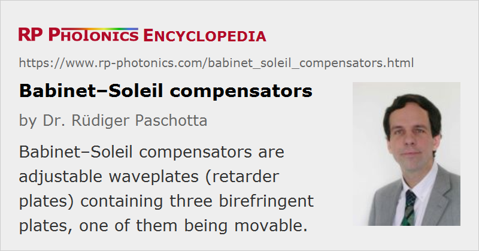

Babinet–Soleil Compensators
Definition: adjustable waveplates (retarder plates) containing three birefringent plates
Alternative term: Babinet compensators
German: Babinet–Soleil-Kompensatoren
How to cite the article; suggest additional literature
Author: Dr. Rüdiger Paschotta
A Babinet–Soleil compensator (or sometimes just Babinet compensator) is essentially a combination of birefringent plates which can be used as an adjustable waveplate (retarder plate). It contains three birefringent plates (see Figure 1), all made from the same material (e.g. crystalline quartz): one plane-parallel plate and two wedges, where the latter have an orientation of the optical axis perpendicular to that of the plane-parallel plate. One of the wedges can be moved in a direction perpendicular to the beam, so that the effective thickness is adjustable. Usually, one uses a translation stage with a micrometers screw for moving that wedge. There are also motorized versions which can be computer-controlled.
If the insertion of the movable wedge is adjusted such that the overall optical path length in the wedges is the same as in the plane-parallel plate, one obtains overall zero retardance, i.e., no changes of polarization direction of a beam. By moving the which somewhat in or out, a retardance of either sign can be obtained in a certain range, e.g. ±λ. The device can act an effective zero-order waveplate with a tunable degree of retardation. That works in a wide range of optical wavelengths.
The wedge angles are made so small that there is (in contrast to a Wollaston polarizer) no substantial spatial separation of polarization components, i.e., no significant transverse beam offset. Note also that although the optical path length in a single wedge depends on the transverse position, that is not the case for a pair of wedges. Therefore, one can obtain uniform retardance over a large aperture. There is also no significant beam deflection if the plates are made with sufficiently high precision.
Although the Babinet–Soleil compensator can be used in a wide range of wavelengths, note that there is some wavelength dependence of the obtained retardance.
The plates often have anti-reflection coatings in order to minimize reflection losses and avoid interference effects.
Compensators are available for different wavelength regions, including the infrared.
Applications of Babinet–Soleil Compensators
Babinet–Soleil compensators can in principle used in any applications where one either requires a variable degree of retardation for a fixed wavelength (e.g. for compensating some other birefringence) or the ability to reach a certain amount of precise amounts of retardation for variable wavelengths. Examples are ellipsometry and polarimetry.
One can also use such a device for measuring the retardance of some other optical elements (e.g. fixed waveplates) by checking which amount of additional retardance is required for compensation, if that can be obtained e.g. with a scale of the used micrometer screw. Compensator may be supplied with tuning data, allowing the user to relate the wedge position to the retardance at different wavelengths.
Alternative Realizations of Adjustable Waveplates
There are other types of tunable waveplates. For example, a Berek compensator consists of a single uniaxial crystal, having its optical axis perpendicular to the parallel faces. For normal incidence, there is no phase retardation, but a variable degree of retardance can be introduced by tilting the plate against the beam. (Unfortunately, the tilting also causes a variable beam offset, which however may be irrelevant in various situations.) This arrangement acts as a tunable true zero-order waveplate.
Another possibility is to use a liquid crystal modulator or a Pockels cell, which can provide an electrically controlled degree of retardance.
Suppliers
The RP Photonics Buyer's Guide contains 7 suppliers for Babinet--Soleil compensators.
Questions and Comments from Users
Here you can submit questions and comments. As far as they get accepted by the author, they will appear above this paragraph together with the author’s answer. The author will decide on acceptance based on certain criteria. Essentially, the issue must be of sufficiently broad interest.
Please do not enter personal data here; we would otherwise delete it soon. (See also our privacy declaration.) If you wish to receive personal feedback or consultancy from the author, please contact him e.g. via e-mail.
By submitting the information, you give your consent to the potential publication of your inputs on our website according to our rules. (If you later retract your consent, we will delete those inputs.) As your inputs are first reviewed by the author, they may be published with some delay.
See also: waveplates, liquid crystal modulators, polarimeters, birefringence, retardance, polarization of light
and other articles in the category photonic devices
|  |
If you like this page, please share the link with your friends and colleagues, e.g. via social media:
These sharing buttons are implemented in a privacy-friendly way!